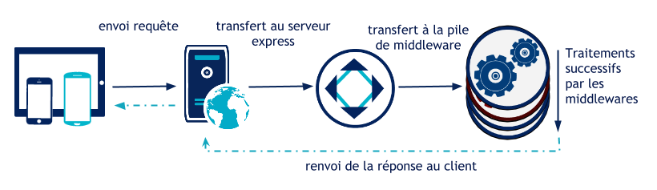
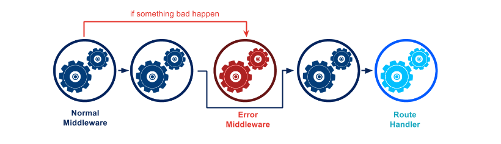
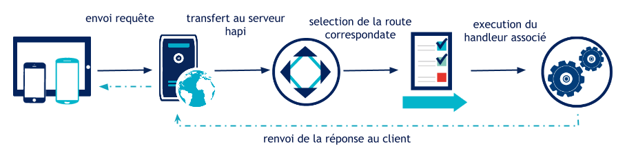
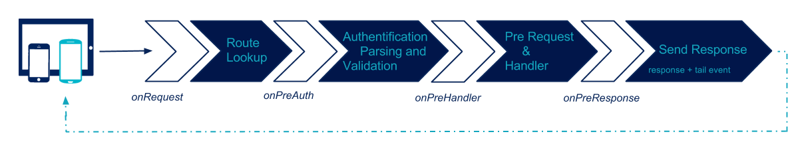

Express vs. Hapi
Qui sommes-nous ?
Florent Jaby
- Consultant pour OCTO Technology
- Noder depuis 2009
- @Floby sur Github et le reste d'internet
Quelques stats
| Métriques | ||
| Github stars | 19k | 4,2k |
|---|---|---|
| Github fork | 3,6k | 0,6k |
| StackOverflow | 15k | 180 |
| Contributor | 177 | 114 |
| Github require | ~360k | 6k |
| First Commit | 26 Juin 2009 | 6 Août 2011 |
Fonctionnement d'Express

Cycle de vie d'une requête HTTP avec Express

Echainement des middlewares
Fonctionnement de Hapi

Cycle de vie d'une requête HTTP avec Hapi

"Hooks" disponible en Hapi
Exemple CRUD Express
MiddleWare
var bodyParser = require('body-parser');
var morgan = require('morgan');
// loading
app.use(bodyParser.json());
app.use(morgan('combined'));
// declaration
function logger(request, response, next) {
var start = +new Date();
var url = request.url;
var method = request.method;
response.on('finish', function() {
var duration = +new Date() - start;
console.log(method + ' ' + url +' (' + duration + ')');
});
next();
}
Routes
app.route('/meetups')
.get(MeetupController.all)
.post(MeetupController.create);
app.route('/meetups/:id')
.get(MeetupController.get)
.put(MeetupController.update)
.patch(MeetupController.partialUpdate)
.delete(MeetupController.remove);
Controllers
function all(req, res) {
MeetupDAO.all(function (all) {
res.json(all);
});
}
function create(req, res) {
if (!req.body.url) {
return res.sendStatus(400);
}
var meetup = Meetup.create(req.body.url, req.body.title, req.body.date);
MeetupDAO.save(meetup, function (newMeetup) {
res.location(meetupsEndpoint + '/' + newMeetup._id);
res.status(201).json({});
});
}
Error handling
Exemple CRUD Hapi
var Hapi = require('Hapi');
var MeetupDAO = require(somePath)(someConfiguration);
var hapiConfig = { load: {sampleInterval: 5000}}; // §ask: inline
var server = new Hapi.Server(hapiConfig);
server.connection({port: 3000});
server.route([
{ method: 'GET',
path: '/meetup',
handler: function (request, reply) {
MeetupDAO.all(function (err, meetups) {
if(err) reply().code(500);
else reply(meetups);
});
}
}
// autres routes.
]);
server.start(function () {
console.log('Server running at:', server.info.uri);
});
Handlers
Controllers
function all(request, reply) {
MeetupDAO.all(function (all) {
reply(all);
});
}
function create(request, reply) {
if (!request.payload.url) {
return reply().code(400);
}
var meetup = Meetup.create(request.payload.url,
request.payload.title, request.payload.date);
MeetupDAO.save(meetup, function (newMeetup) {
reply().created(meetupsEndpoint + '/' + newMeetup._id);
});
}
Error handling
Injection de dépendances
Express
Hapi
Conclusion
Express
- old-timer
- "lightweight", "thin", "lean", bref : minimal
- Incrément et itérations rapides au début
- Perte de robustesse et de maintenabilité au fil du temps
Hapi
- new player
- "Vrai" framework qui apporte ses conventions et abstractions
- Courbe d'apprentissage plus forte
- Plus industriel, plus compréhensible pour les dev non-js
Tooling
Express
- 20k modules npm
- Les outils StrongLoop
- n'importer quel outil unix ;)
Hapi
- La suite "Walmart / Hapijs"
- n'importer quel outil unix ;)
Merci !
have some more links
Pourquoi utiliser Node pour réaliser mon API ?